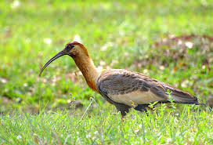
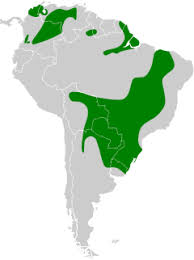

Curicaca
Nome científico:(Theristicus caudatus Boddaert, 1783)
Nome comum: Curicaca
Classificação biológica:
Domínio: Eukaryota.
Reino: Animalia.
Filo: Chordata.
Classe: Aves.
Ordem: Pelecaniformes.
Família: Threskiornithidae.
Gênero: Theristicus.
Espécie: Theristicus caudatus.
Nutrição:Carnívora.
Hábitos alimentares:Alimenta-se de pequenos vertebrados e invertebrados, como insetos, crustáceos, anfíbios, répteis, moluscos, vermes e pequenos mamíferos. Para encontrar suas presas, utiliza seu longo bico para sondar o solo úmido ou lamacento em busca de alimento.
Morfologia do corpo:Mede aproximadamente 75 cm de comprimento, com uma envergadura de 120 a 135 cm. Possui um longo bico curvo e patas longas que a ajudam a se movimentar em terrenos pantanosos.
Comportamento:A curicaca é uma ave diurna e gregária, ativa durante o dia em áreas abertas como pastagens e margens de corpos d'água. Alimenta-se de insetos, pequenos vertebrados e invertebrados. Utiliza vocalizações altas para se comunicar com o grupo.
Principais Presas:Insetos como grilos, gafanhotos e besouros, minhocas, rãs, pequenos lagartos, cobras e roedores.
Principais Predadores:Aves de rapina, incluindo gaviões e águias, além de mamíferos carnívoros, como raposas e pequenos felinos. Esses predadores podem atacar tanto os adultos quanto os filhotes e ovos nos ninhos.
Locais habitados
Distribuição:Nos Biomas do Pantanal, Cerrado, Pampas e áreas de transição
Habitat:A curicaca prefere áreas abertas e semiabertas, como pastagens, margens de corpos d'água e planícies alagáveis. Alimenta-se de insetos, pequenos vertebrados e invertebrados, e é frequentemente encontrada em campos úmidos e zonas de várzea.
Reprodução:A curicaca nidifica em árvores, muitas vezes em colônias, onde constrói ninhos com galhos. A fêmea põe de 2 a 4 ovos, que são incubados por aproximadamente 28 dias. Tanto o macho quanto a fêmea participam dos cuidados com os filhotes, que deixam o ninho após cerca de 5 a 6 semanas.